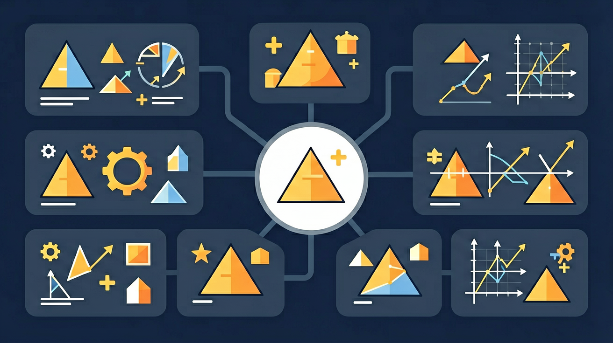

四年级数学 · 认识三角形的神奇性质！
🏔️ 三角形是最稳固的形状，来发现它的秘密！

把三角形的各部分名称拖到正确位置！
🏷️ 名称标签
📌 填入位置
🔴 四边形（会变形）
🟢 三角形（超稳固）
能组成三角形吗？任意两边之和必须大于第三边！
连续答对3题才能通关！
🔺 三角形探险完成！
👋 我是小AI！
点我获取提示！
先来测一测你已经掌握了哪些前置知识，帮助你更好地学习新内容！
第1题：三角形有几个内角？
第2题：直角三角形中有一个角是90°，另外两个角之和是？
三角形的"内角和=180°"可以这样理解：把三角形三个角剪下来拼在一起，恰好拼成一条直线（180°平角）！三边关系则告诉我们：两条短边加起来必须能"够得到"长边，否则首尾不能相连。
💡 用"迁移它"的视角：想想这个知识在哪些生活场景中还会用到？
注意：以上是同学们容易犯的典型错误，做题时要格外小心！
完成学习后，用这两道题检验你对"三角形的性质"的掌握程度！
第1题：三角形两个角分别是45°和75°，第三个角是？
第2题：三条线段长度为3cm、4cm、8cm，能组成三角形吗？
回忆：今天学了哪些关键词和规则？试着说出来。
用自己的话解释今天学的核心概念，不看书能说清楚吗？
用今天的知识解决一个实际问题，或写一个新例子。
把今天的知识与已有知识联系起来：有什么共同点？有什么区别？能不能自己创造一道新题？
先独立作答，再点选项查看对错与错因。
以下哪种三角形的三个角都小于90度？
一个三角形的两边长度分别为5cm和7cm，第三边的长度可能是多少？
以下哪个三角形的三个边长都相等？
一个三角形的三个内角之和是____度。
答案：180
三角形的内角和总是180度。
一个等边三角形的每个内角都是____度。
答案：60
等边三角形的三个内角都相等，每个角都是60度。
以下哪个性质是所有三角形共有的？
测量校园花坛的边长和角度，确定其类型。
❓ 为什么三角形比四边形更稳固？
❓ 怎么判断三条边能不能组成三角形？
❓ 三角形的三个角加起来一定是180度吗？
学完这一课，这些问题你都能自信地回答。
✅ 演示3+4<8的实际测量
💡 未掌握'两边和大于第三边'原则
✅ 展示钝角三角形外部高的画法
💡 对高的定义理解片面
口诀：边边角角要记牢，三边之和大于第三边
类比：三角形就像固定好的折叠凳，怎么压都不会变形
And：学生知道三角形有三条边
But：不理解三边长度必须满足什么条件才能围成三角形
Therefore：通过动手实验发现三角形三边关系
三角形任意两边之和必须大于第三边！比如用小木棒实验：3cm、4cm、5cm能拼成三角形，因为3+4>5、3+5>4、4+5>3都成立。但1cm、2cm、3cm就不行，因为1+2=3，两边之和没有大于第三边。
🌍 盖房子时，工人叔叔用三根钢筋搭支架，如果钢筋长度没选好，架子就会塌下来。就像我们跳绳时，绳子太短就跳不过去啦！
下面哪组小棒能拼成三角形？
And：学生认识锐角、直角、钝角
But：不知道三角形内角加起来是多少
Therefore：用撕角实验验证内角和规律
所有三角形的内角和都是180°！我们可以把三个角撕下来拼成平角来验证。比如：一个三角形有60°、60°、60°三个角，加起来正好180°；另一个三角形有90°、45°、45°，加起来也是180°。
🌍 足球射门时，守门员要判断球飞来的角度。如果三个射门点连成三角形，所有角度加起来就像量角器转半圈那么大。
已知三角形两个角是70°和50°，第三个角是？
And：学生知道身高是从头顶垂直量到脚底
But：不理解三角形的高可以有不同的位置
Therefore：通过变魔术理解高的相对性
三角形的高是从一个顶点向对边作的垂直线段！同一个三角形有三条高。比如：等腰三角形ABC，从顶角A向底边BC画高，这条高正好把三角形分成两个小直角三角形。如果把三角形转个方向，高就跑到其他位置了。
🌍 就像测量教学楼高度，站在正前方测是直直的，如果站到侧面斜坡上测，尺子就要斜着放，高的位置就变了。
直角三角形的高有几条在三角形外面？
同学们，你们观察过大桥的钢架结构吗？为什么工程师要用那么多三角形而不是方形呢？这其实和三角形的稳定性有关！当三个边固定后，三角形是唯一不会变形的形状，这个特性叫做三角形的稳定性。你想想看，如果用四根木条钉成四边形，轻轻一推就会变成平行四边形，但三角形就像被施了魔法一样纹丝不动。说白了，三角形是最坚固的"几何积木"，所以塔吊、屋顶支架甚至你的折叠椅都用它来承重。
生活实例：看这张自行车车架照片，车梁和支撑杆组成的全是三角形网络。上次台风天，小明发现路边广告牌的金属框架被吹歪了，但旁边的输电塔依然笔直——因为输电塔是用无数小三角形拼接成的立体框架，就像用乐高积木搭的超级稳固城堡！
让我们当一回几何侦探！仔细观察埃及金字塔、帆船上的帆布、甚至披萨切块——它们都在用三角形创造美感。艺术家发现用三角形构图能让画面更生动，比如山峰的轮廓线形成三角形会显得威严，而倒三角形（▽）就像跳芭蕾的脚尖让人感觉轻快。你想想看，把名画《蒙娜丽莎》的脸部轮廓简化，是不是接近两个倒三角组成的菱形？说白了，三角形是藏在艺术里的"情绪开关"，尖角朝上显得稳定，尖角朝下就有动感。
生活实例：周末小美拼贴旅行照片时，把三张照片按三角形排列在相册页面上，比直线排列生动多了！足球比赛的战术板上，教练用三角形箭头表示进攻路线，因为三角形天生就有"方向感"，就像路标一样能引导视线移动。